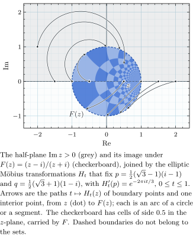
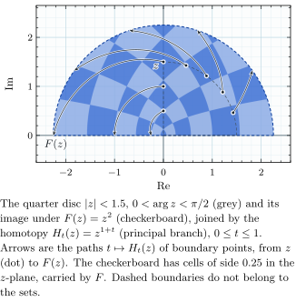
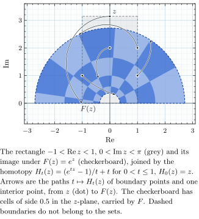
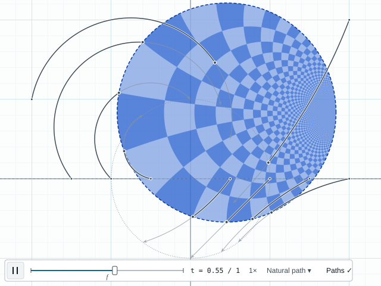
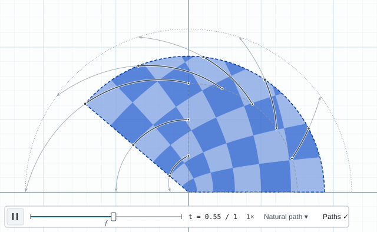

Deformation as one picture
Prototype for backlog item 2 (notes/ui-design/morph-figure.md), revision 2. Article figures at single-column width (3.4 in), then the on-screen form at t = 0.55. Made by morph-figure.js using the app's own homotopies (src/funcs.js). Paths, labels and captions are chosen by the rules of morph-figure.md 4–5, not by hand; out/selection-log.txt says which paths were kept or dropped and why.



On screen (right panel, transport open, t = 0.55)

